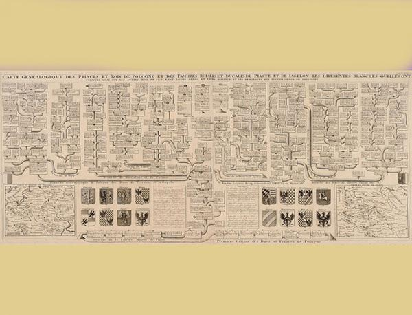

medis
About me

Past Articles
- Geni World Šeimos Medis - MyHeritage
statusas T sritis informatika apibrėžtis Hierarchinės struktūros atvaizdis. Iliustraciją žr. priede. Medis piešiamas atvirkščiai – šaknimi į viršų, nes aukščiausias hierarchijos mazgas yra šaknis. Einant žemyn medis šakojasi. Mazgas, nebeturintis - Mediena terasoms | Medžio bitės
kanadų kalba: nurodykite žodžio medis vertimą(-us) (Kanadų kalba), žr. karakalpakų kalba: ag'ash karačajų-balkarų kalba: терек (terek) Katalonų kalba: arbre Kazachų kalba: ағаш (ağaş), дарақ (daraq) kašubų kalba: drzéwò - medis - ekologijos_lt.enacademic.com
medis statusas T sritis ekologija ir aplinkotyra apibrėžtis Stambus daugiametis augalas (paprastai ne žemesnis kaip 2 m aukščio) su sumedėjusiu stiebu ir šaknimis, lają sudarančiomis šakomis ir viršutiniu ūgliu.atitikmenys: angl. tree vok.: angl. tree vok. - Pjautinė mediena: lentos, ruošiniai, statybinė mediena ...
Medienos pramonės įmonių katalogas bei skelbimų lenta. - Etaplius - Mirties medis, po kuriuo ypač pavojinga stovėti ...
Geni World Šeimos Medis yra pats didžiausias ir plačiausias medis pasaulyje, sudarytas remiantis milijonų genealogų ir ekspertų komandomų bendromis pastangomis. Geni World Šeimos Medį surasite www.Geni.com. Geni priklauso ir yra valdomas MyHeritage. - Sveikas Medis – Medžių genėjimo profesionalai
Pjautinė mediena - Medis.lt - Įmonės, kurių produkcija yra džiovinta ir "žalia" (nedžiovinta) mediena: UAB Log Forest, UAB Stilmeda, UAB Rūdiškių mediena, UAB Nilma ir virš 1000 kitų pjautinės medienos įmonių. - medis - Vikižodynas - Wiktionary
Svetainės medis Svetainės medis. Titulinis. Lietuvos oro uostai Apie Lietuvos oro uostus Misija, vizija, vertybės Strateginės veiklos kryptys Valdymas ir struktūra Valdymo struktūra Vadovybė Valdybos nariai ... - Vynuogių Medis
Jei matysime, kad medis yra pataisomas- rekomenduosime veiksmus, kuriuos atlikus jis nekeltų pavojaus ir liktų gyvas. KONSULTACIJA IR LEIDIMŲ GAVIMAS Jeigu Jums neduoda ramybės kieme augantis medis, mes galime įvertinti jo būkle ir rekomenduoti veiksmus, kuriuos atlikus, šis medis taptu saugus ir sveikas. - Balėnų Medis – Visa statybinė mediena, terasinės lentos ...
Daugiau kaip 20 metų medienos srityje dirbančios UAB "Balėnų medis" pagrindinė veikla yra medžio apdirbimas. Visa statybinė mediena pjaunama iš lietuviškos medienos (pušies arba eglės). Įmonėje parduodama visa statybinė mediena, terasinės lentos, lauko dailylentės bei interjero detalės. - medis - encikloped_new_lt.enacademic.com
Medis simbolizuoja viską, kas susiję su augimu, gyvybingumu, veržlumu, kūrybingumu, meniniu aktyvumu ir tuo, kas auga arba mus maitina. Medžio elementui priskiriamų daiktų neturėtų trūkti sodo reikmenų parduotuvėse, vaikų darželiuose, restoranuose ir menininkų dirbtuvėse. Namuose medžio elementas svarbus valgomajame ...
Menu
- Geni World Šeimos Medis - MyHeritage
- Mediena terasoms | Medžio bitės
- medis - ekologijos_lt.enacademic.com
- Pjautinė mediena: lentos, ruošiniai, statybinė mediena ...
- Etaplius - Mirties medis, po kuriuo ypač pavojinga stovėti ...
- Sveikas Medis – Medžių genėjimo profesionalai
- medis - Vikižodynas - Wiktionary
- Vynuogių Medis
- Balėnų Medis – Visa statybinė mediena, terasinės lentos ...
- medis - encikloped_new_lt.enacademic.com
Pjautinė mediena: lentos, ruošiniai, statybinė mediena, pabėgiai | Skelbimai | Medis.lt

SKELBIMAI
ĮMONĖS
I-V 9:00-17:00+370 693 03603
1008 skelbimai
+ NAUJAS SKELBIMASPrisijungti
Registruotis
+ NAUJAS SKELBIMASSkelbimai
(1008)Pjautinė mediena
(380) Prenumeruoti skelbimusStatybinė mediena
(89)Pabėgiai
(3)Stulpai
(2)Taros ruošiniai
(78)Ruošiniai baldams
(74)Ruošiniai parketui
(17)Lentos
(207)Kita pjautinė mediena
(45) Susijęs turinys: Medienos pjovimo paslaugos Siūlo 3 10.15 Alytaus r. sav. 3sausos ąžuolo, uosio lentos, fsc 100
MEDINUKAI, UAB Sutartinė
Sutartinė Siūlo Šiandien Jurbarko r. sav.
juodalksnio ruošiniai 12/15 x 50/71/93mm
ELODENA, UAB Sutartinė
Sutartinė Siūlo Šiandien Jurbarko r. sav.
brusas 35x95x1200
ELODENA, UAB 100,00 EUR / 345,28 Lt
121,00 EUR / 417,79 Lt
(100,00 EUR / 345,28 Lt be PVM)
Ieško Šiandien Raseinių r. sav.Perkame viengubo pjovimo beržo lentas, AB kokybės, nedžiovintas
Murameda, UAB Sutartinė
Sutartinė Siūlo Šiandien Raseinių r. sav.
džiovinti beržo dvigubo pjovimo ruošiniai 32mm
Murameda, UAB Sutartinė
Sutartinė Siūlo Šiandien Raseinių r. sav.
viengubo pjovimo beržas bc kd
Murameda, UAB Sutartinė
Sutartinė Siūlo Šiandien Šilalės r. sav.
Viengubos, šviežio pjovimo ąžuolo, uosio lentos
UOSIS, UAB Sutartinė
Sutartinė Siūlo Šiandien Visa Lietuva
Lovos grotelės - lamelės didmena
TESUS, UAB Sutartinė
Sutartinė Ieško Šiandien Klaipėdos m. sav.
Perkame viengubo pjovimo beržo lentas plotis 25-45cm fsc
SBA Baldų kompanija, UAB Sutartinė
Sutartinė Siūlo Šiandien Trakų r. sav.
Dvigubo ir viengubo pjovimo mediena
Nestrėvaitis, V. Kananavičiaus įmonė Sutartinė
Sutartinė Siūlo Šiandien Trakų r. sav.
Impregnuota mediena
Nestrėvaitis, V. Kananavičiaus įmonė Sutartinė
Sutartinė Siūlo Šiandien Trakų r. sav.
Tarinė mediena
Nestrėvaitis, V. Kananavičiaus įmonė Sutartinė
Sutartinė Siūlo Šiandien Trakų r. sav.
Džiovinta mediena
Nestrėvaitis, V. Kananavičiaus įmonė Sutartinė
Sutartinė Siūlo Šiandien Trakų r. sav.
Terasinės lentos
Nestrėvaitis, V. Kananavičiaus įmonė Sutartinė
Sutartinė Siūlo Šiandien Vilniaus m. sav.
50x100/150x6000 egle rusiska 195eur
Rasis, UAB Sutartinė
Sutartinė Siūlo Šiandien Prienų r. sav.
a klasės juodalksnis viengubo pjovimo
Kukras, UAB Sutartinė
Sutartinė Siūlo Šiandien Prienų r. sav.
statybinė mediena 25x100-6m
Kukras, UAB Sutartinė
Sutartinė Ieško Šiandien Prienų r. sav.
ieškau 17x118x880 arba panašaus matmens
Kukras, UAB Sutartinė
Sutartinė Ieško Šiandien Plungės r. sav.
pjauta spygliuočių ir lapuočių mediena
GILINIS, UAB Sutartinė
Sutartinė Ieško Šiandien Plungės r. sav.
58x58x800 mm.
GILINIS, UAB Sutartinė
Sutartinė Prenumeruoti skelbimus 1 2 3 4 Puslapiai:
Pjautinė mediena - Medis.lt - Įmonės, kurių produkcija yra džiovinta ir "žalia" (nedžiovinta) mediena: UAB Log Forest, UAB Stilmeda, UAB Rūdiškių mediena, UAB Nilma ir virš 1000 kitų pjautinės medienos įmonių.
- Įvairūs medienos gaminiai: statybinė mediena , tarinės lentelės, medienos ruošiniai, lentos .
- Medžio pjovimas lentpjūvėse, medienos ruošimas. Kontaktai Mūsų paslaugos Reklama
Posted by Jack  Read more
Read more  Comments (15)
Comments (15)  2020.10.29 11:16
2020.10.29 11:16